Shadow drawings
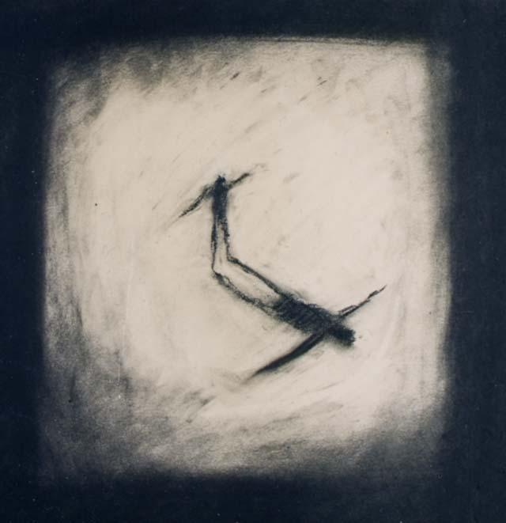
Would you not ?
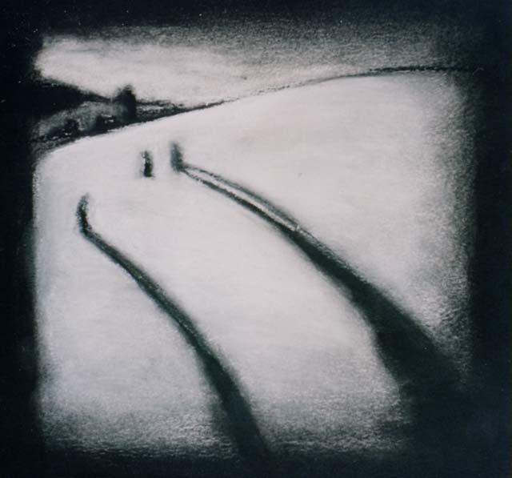
Taking with him my shadow
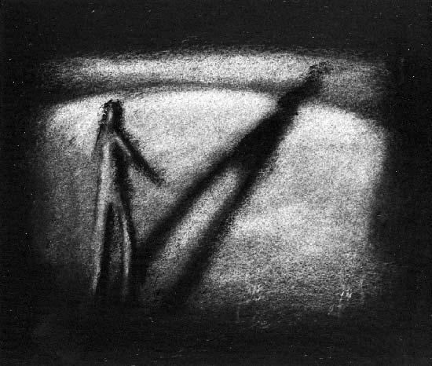
Cast
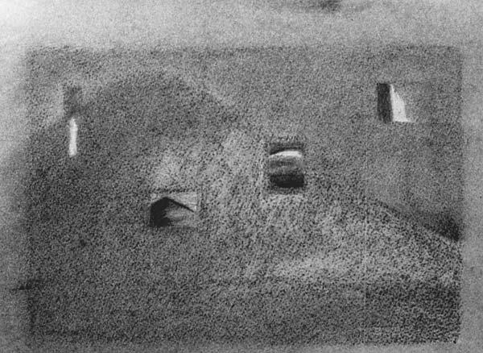
Secrets
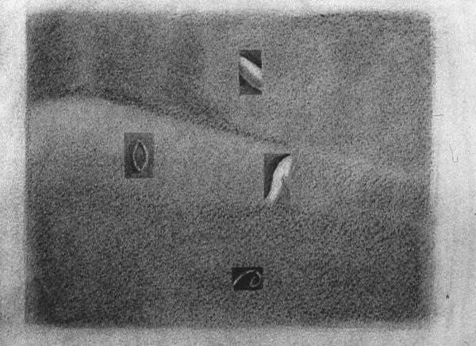
Sights
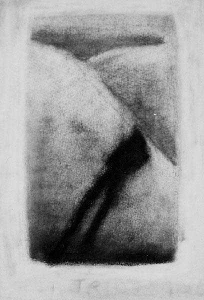
On the Hill
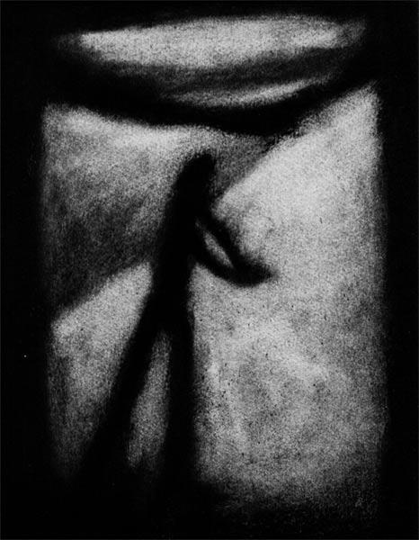
Caught
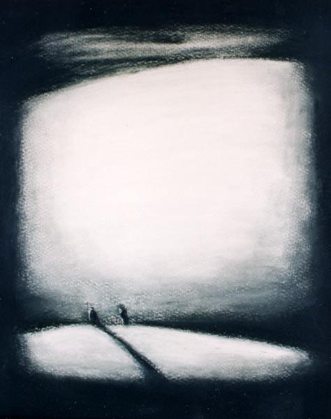
I Started
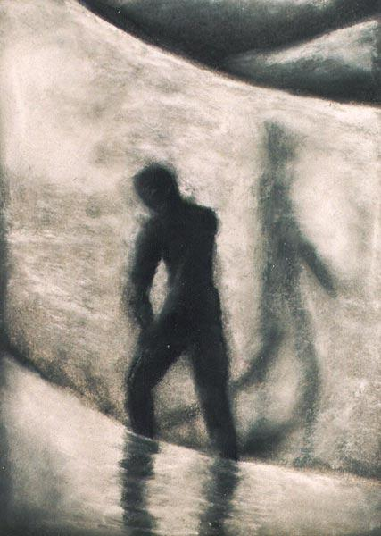
Schlemihl's Stream

I Started
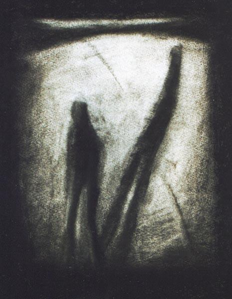
Crossing
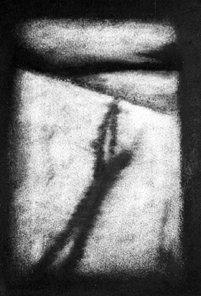
Raised
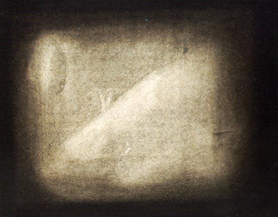
First Night
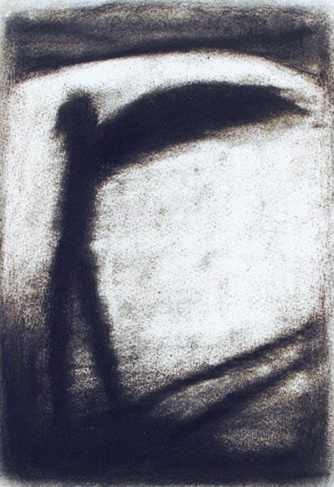
Desire
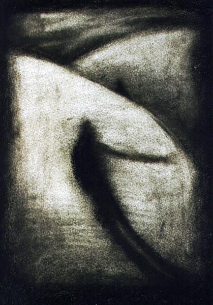
Reach Out
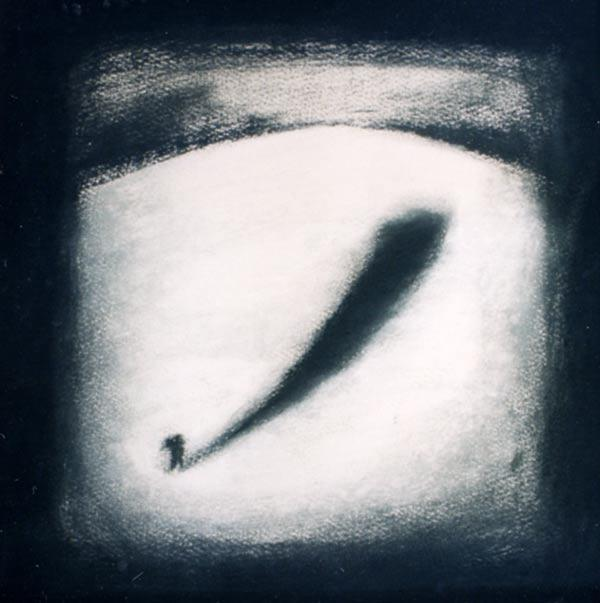
Shadowed
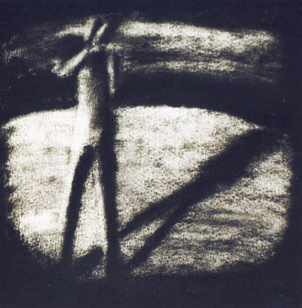
Shadow Me
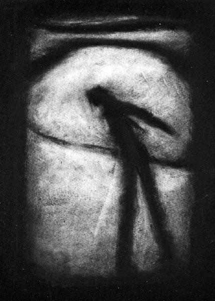
Somnabulist
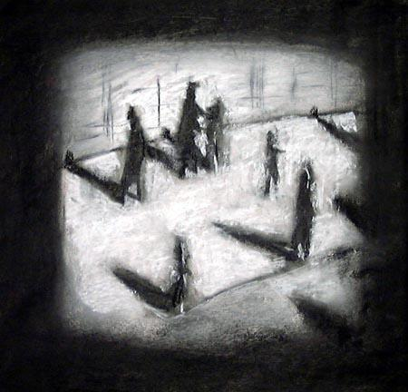
Tuesday 4th
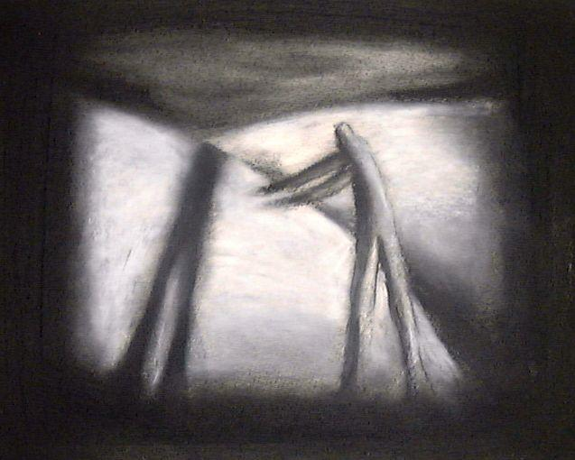
Dance Two
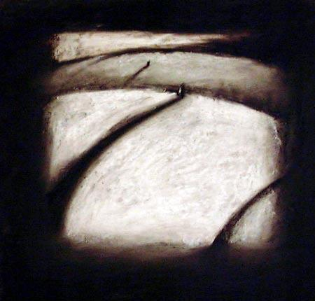
Untitled
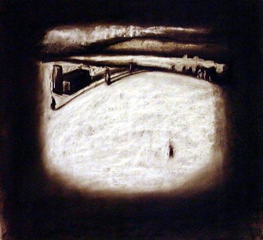
Sunday 2nd
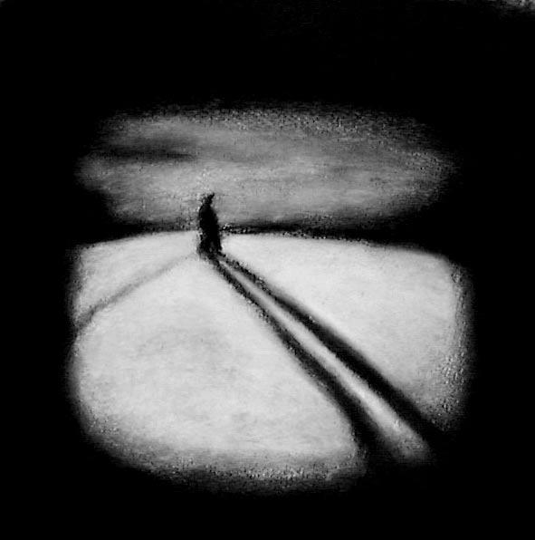
Untitled 2
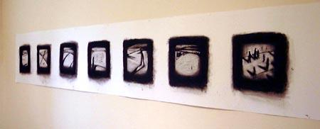
Final panorama
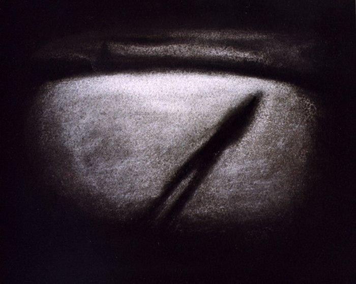
Reflection
This series of shadow drawings was prompted by the search for narrative in previous abstract works. Soon afterwards I came across Adalbert von Chamisso's, the author of Peter Schlemihls wundersame Geschichte, 1814, or The Man Who Sold His Shadow, a popular children's tale even today. A year later Chamisso travelled as naturalist on the Rurik Expedition to discover a north-east passage in the Bering Straits. His tale of the shadow can be read as a reflection of his own feelings of dislocation and homelessness as a Frenchman by birth living on German soil. He was a poet of the Romantic movement who spent his life as a naturalist in the pursuit of truth in science.